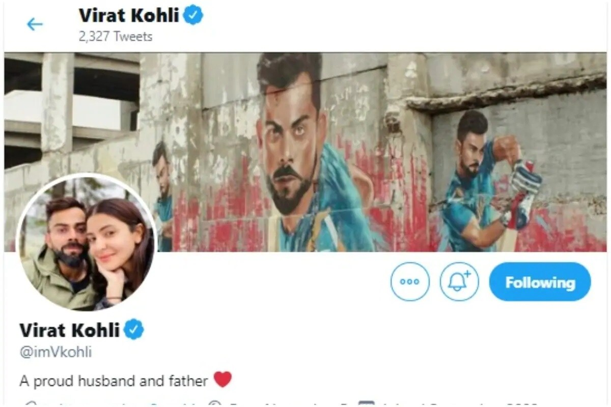
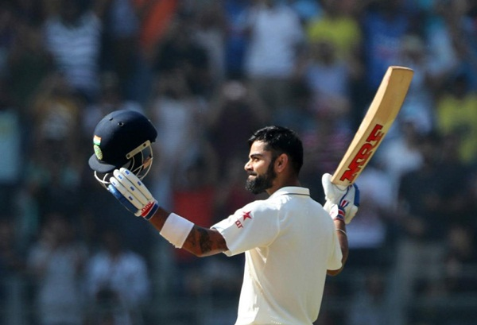
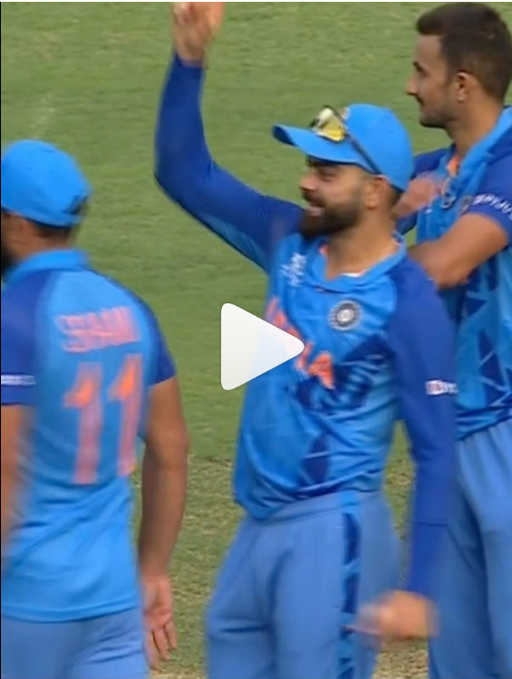

🏏 Virat Kohli 🏏
Kohli made his Test debut in 2011.He reached the number one spot in the ICC rankings for ODI batsmen for the first time in 2013.He has won Man of the Tournament twice at the ICC World Twenty20 (in 2014 and 2016). He also holds the world record of being the fastest to 23,000 international runs.
Tweets 🍹
Read 5.1K Replies
Images 👨
Instgram ♾️

